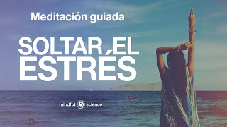

Inicio
Tips para concentrarse más al estudiar
CSS
PHP
NODEJS
VUEJS
Como hacer
Como crear
¡Encuentra tu tema interés!
¡Aquí encontrarás artículos súper relevantes que te vendrán de maravilla!
psicologia CETAV
Consejos para recuperar y mejorar nuestra capacidad de atención y concentración.
23 sept 2021
Estrategias de aprendizaje
Leer más
Tips para concentrarse mejor al estudiar
11 jul 2020
Estrategias de aprendizaje
Leer más
Técnicas con respaldo científico que te ayudaran a recordar conceptos y hechos de manera más efectiva.
15 feb 2017
Estrategias de aprendizaje
Leer más
¿Qué es el Estrés? Nosotros te lo podemos explicar
18 ene 2016
Emociones y aprendizaje
Leer más
El estrés es simplemente la respuesta del organismo a los cambios que crean demandas impositivas.
6 dic 2018
Emociones y aprendizaje
Leer más
Una mente gobernada por pensamientos negativos causa estrés, ansiedad y eventualmente depresión.
2 nov 2022
Emociones y aprendizaje
Leer más

La práctica diaria de la relajación te ayuda a controlar y a reducir los estados de ansiedad.
7 jun 2020
Emociones y aprendizaje
Leer más
Los temas abordan problemas de salud mental identificados en discusiones con miembros de la comunidad.
14 feb 2022
Emociones y aprendizaje
Leer más
Las habilidades blandas para tu entrevista de trabajo, que te abrirán muchas puertas.
5 nov 2020
Habilidades Blandas
Leer más
Las habilidades blandas son aquellas que van más allá de tus conocimientos técnicos.
15 jun 2020
Habilidades Blandas
Leer más
Existen millones de estrategias y formas de desarrollar una habilidad y para poder adquirirlas
12 ene 2021
Habilidades Blandas
Leer más
Identifica qué son las habilidades duras, qué son las habilidades blandas y aprende a diferenciarlas
5 jun 2019
Habilidades Blandas
Leer más
La psicóloga Silvia Congost comparte con un grupo de adolescentes las claves para lograr una autoestima sana y fuerte.
4 nov 2021
Inteligencia emocional y bienestar
Leer más
Desarrolla una sana autoestima, a partir de las enseñanzas de Nathaniel Branden, autor de 'Los seis pilares de la autoestima'
25 nov 2020
Inteligencia emocional y bienestar
Leer más
Este vídeo, en donde la lingüista analiza algunos de los mecanismos que nos permitan conversar de una manera más equilibrada
21 abr 2021
Inteligencia emocional y bienestar
Leer más
Te enseñamos sobre lo que es la comunicación asertiva y su importancia.
8 ene 2018
Inteligencia emocional y bienestar
Leer más
En donde podés aprender a comunicarte de forma asertiva, y a poder profundizar este tema para aplicarlo en tu vida
11 sept 2017
Inteligencia emocional y bienestar
Leer más
Te brindamos consejos, sobre cosas que no debesde hacer en una entrevista de trabajo
18 abr 2017
Desarrollo Profesional y Proyecto de Vida
Leer más
Te enseñamos a identificar tus debilidades, para convertirlos en tus fortalezas
29 ago 2017
Desarrollo Profesional y Proyecto de Vida
Leer más
Consejos para poder hacer tu propio curriculum vitae paso a paso, sin experiencia laboral
18 abr 2021
Desarrollo Profesional y Proyecto de Vida
Leer más